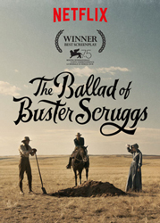
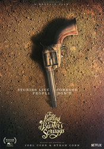
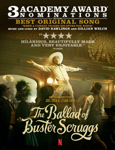
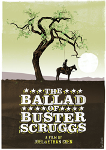
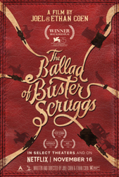

Tim Blake Nelson
Willie Watson
E.E. Bell
Alejandro Patiño
Danny McCarthy
James Franco
Ralph Ineson
Liam Neeson
Harry Melling
Sam Dillon
Bill Heck
Grainger Hines
Jackamoe Buzzell
Tyne Daly
Jonjo O'Neill
Bruno Delbonnel
Six tales of life and violence in the Old West, following a singing gunslinger, a bank robber, a traveling impresario, an elderly prospector, a wagon train, and a perverse pair of bounty hunters.
Joel and Ethan Coen announced The Ballad of Buster Scruggs in January 2017 as a collaboration with Annapurna Television and, in August 2017, Netflix announced it would stream the work worldwide. The film was based on Western-themed short stories which were written by the Coens over a period of 20 to 25 years (accounts differ) that vary in mood and subject.
The Ballad of Buster Scruggs was the Coens' first film to be shot digitally. The filmmakers saw the project, with its 800 visual effects and late "magic hour" shoots, as a good opportunity to experiment with the medium.
Joel Coen said the shoot was physically demanding: exterior shots with uncovered sets, "really brutal weather" and much travel over wide-ranging locations. "It wouldn’t have hurt if we were younger." The long wagon train in "The Gal Who Got Rattled" proved especially challenging because of the difficulty of co-ordinating the oxen teams for timing and direction. Fourteen wagons were built from scratch in a New Mexico blacksmith shop, and then shipped in pairs on flatbed trailers to the shooting location in Nebraska. Their design was influenced by the 1930 film The Big Trail. Most of the costumes were handmade for the production. Designer Mary Zophres credited historical reenactment supply companies for carrying hard-to-find period fabrics, noting that U.S. wool production, at the time of filming, was "practically nil".




